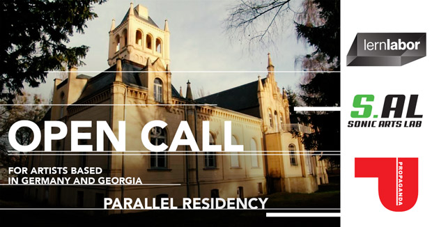

POLINA TIKK
Polina curates art events and residencies. Her curatorial focus lies in community building, searching for new sustainable society visions and bending approaches to experiencing art.
Her artistic expression manifests through performance and singing.
Polina is a core team member of Lernlabor, a Berlin-based social business that creates innovative educational, cultural and artistic projects.
She is a board member of the Palace Collective, is an international creative network and events organisation focused on cross-disciplinary collaboration, self organisation and arts based community development.
Links:
INSTAGRAM
CV �
RECENT PROJECTS
PARALLEL Residency
'PARALLEL' will foster real-time exchange and collaboration between a total of sixteen artists, via the innovative framework of a dual residency happening simultaneously in Georgia and Germany. November 2021. Funded by EVZ Stiftung.
Role: Concept and Curation

'a:part: Berlin-Poltava' hybrid art collaboration
Separated by a distance of 1600km but interacting in real time, 17 young and emerging artists perform together and stretch the framework of our conceptual imagination. December 2020. Funded by EVZ Stiftung. www.apartberlinpoltava.net
Role: Concept, Curation and Art Direction

'Urcylium' community theatre project inspired by the kingdom of fungi
Fascinated by mycelial connections and rhizomatic modalities 'Urcylium' investigates the science of mycology, translating it into performative arts and participatory processes. Gerswalde 2021. Funded by Fonds Darstellende Künste. Watch Trailer
Role: Co-Curation, Production